User Guide for MariaDB#
Introduction#
Aurreum Data Protection Suite (ADPS) enables you to back up and restore MariaDB databases. This guide describes how to install the ADPS agent and how to back up and restore MariaDB databases.
Features#
Feature |
Description |
|---|---|
Backup source |
Database (single, multiple) |
Backup type |
Full backup: Back up an entire copy of the data source. |
Backup target |
Standard storage pool, de-duplication storage pool, database synthetic pool, local storage pool, tape library pool, object storage service pool, LAN-Free pool |
Backup compression |
None, fast |
Backup channels |
A positive integer between 1-64 |
Backup schedule |
Immediate, one-time, minutely, hourly, daily, weekly, monthly |
Restore type |
Timepoint restore: Restore a database to a specified point-in-time state including backup state, point in time, and LSN. |
Restore location |
Original path, specified path |
Restore target |
Overwrite the source database, create a new database |
Restore granularity |
Entire database (single, multiple) |
Restore to different hosts |
Restoring to a different host with the same version or from an older version to a later version is supported. |
Pre/Post action |
The pre action is executed after the job starts and before the resource is backed up or restored. The post action is executed after the resource is backed up or restored. |
Speed limit |
The data transfer speed or disk read and write speed can be limited. |
Reconnection time |
The job continues after the abnormal reset occurs in the network within the set time. The default value is 10 minutes. |
Stop jobs |
Backup and restore jobs can be stopped. |
Storage pool replication |
MariaDB backup sets support storage pool replication. |
Restore from target pools |
Restoring backup sets from the target storage pool is supported. |
D2C |
Data can be backed up directly to object storage services. |
D2T |
Data can be backed up directly to tape libraries. |
LAN-Free |
Backing up data to and restoring data from LAN-Free storage pools are supported. |
Cluster environment |
Master-Slave Replication and Dual Master Replication are supported. |
Modify a job’s backup source and target |
Modifying a job’s backup source and backup target is supported. |
IPv6 |
Data transfer and management over the IPv6 network are supported. |
Note:
MariaDB on Windows supports only logical backup and its service name must include “MySQL” so that it can be recognized by ADPS.
Install and Configure Agent#
Verify Compatibility#
ADPS supports the backup and restore for MariaDB single instance, multiple instances, master-slave cluster, master-master cluster. Before you install an agent, check whether your environment is supported.
Single Instance#
Database Version |
Database Bits |
OS |
CPU Architecture |
OS Bits |
Note |
|---|---|---|---|---|---|
5.5.56 |
64 |
Red Hat 6.0 |
x86 |
64 |
|
5.5.56 |
64 |
Red Hat 7.4 |
x86 |
64 |
|
10.0 |
64 |
Debian 9.0 |
x86 |
64 |
|
10.0 |
64 |
Red Hat 5.0 |
x86 |
64 |
|
10.0.23 |
64 |
CentOS 6.0 |
x86 |
64 |
|
10.0.26 |
64 |
Red Hat 6.0 |
x86 |
64 |
|
10.1.9 |
64 |
CentOS 7.0 |
x86 |
64 |
|
10.1.12 |
64 |
Debian 8.3 |
x86 |
64 |
|
10.1.12 |
32 |
Red Hat 6.5 |
x86 |
32 |
|
10.2.12 |
32 |
Red Hat 6.0 |
x86 |
64 |
|
10.4.17 |
32 |
CentOS 7.6 |
x86 |
64 |
|
10.4.17 |
64 |
Windows 2012 R2 |
x86 |
64 |
|
10.5.9 |
64 |
CentOS 7.6 |
x86 |
64 |
|
10.5.9 |
64 |
Windows 2012 R2 |
x86 |
64 |
|
10.5.12 |
64 |
CentOS 7.5 |
x86 |
64 |
Cluster#
Database Version |
Database Bits |
OS |
CPU Architecture |
OS Bits |
Note |
|---|---|---|---|---|---|
10.1.34 |
64 |
CentOS 7.3 |
x86 |
64 |
One master one slave |
10.2.41 |
64 |
CentOS 7.3 |
x86 |
64 |
Dual masters |
Download Agent Package#
Log in to the ADPS console as the admin. Click Resource -> Install Agent icon.

Install and Configure Agent on Windows#
Download Installation Package#
In the Install agent window, select Windows and click Download Windows agent to download the package.

Install Agent on Windows#
Copy the package to the target host.
Double-click the package to launch the setup wizard and click Next.
This package selects the database resources, files, or applications installed on the host by default. Select the MySQL component and click Next.

Enter the Backup Server Host, Backup Server Port, and Access Key. Click Next.

The Access Key identifies the operator of the agent. You can see the user account’s Access Key on the Personal Settings -> Settings.
If the backup server is a non-tenant version, it is not required to configure Access Key.
If the backup server is a tenant version, then an Access Key is required. If you leave it blank, the resource will be bound to the admin. If you enter the Access Key, the resource will be bound to the corresponding tenant.
Select Destination Folder and click Next to install the software. Wait for the installation to complete.
Install Agent on Linux#
In the Install agent window, select Linux and MySQL. The corresponding commands appear. Copy an installation command.
Paste and run the command in the terminal of the target host to execute the installation.
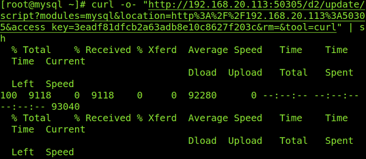
Check Successful Installation#
After the successful installation, log in to the ADPS console as the admin and go to the Resource page. The host with the agent installed will be available on the Resource list.

Activate License and Authorize User#
This chapter applies to configuring one agent. If you have multiple agents, you can deploy them first, then carry out activation and authorization in batches.
Register Host#
Log in to ADPS as the admin, go to Resource, and select the host that you want to activate. Click the Register icon.

Activate License#
In the pop-up Activate window, select the resource that you want to activate. Click Submit.

Authorize User#
After the activation, authorize users to operate the resource in the pop-up Authorize window.

Before You Begin#
Check Resource#
Log in to the ADPS console as the operator, and go to Resource. The activated and authorized resource is available on the list with an “Online” state. If the resource is not available, check Activate License and Authorize User.

Check Storage Pool#
Log in to the ADPS console as the operator, go to Storage Pool, and verify the presence of storage pools. If no storage pool is available, contact the admin to create one and assign permissions to the operator.

First Time Login#
Before creating the first MariaDB backup and restore, go to Resource and click Login next to the resource to log in to MariaDB.

Enter the MariaDB user name and password.

Create Backup Jobs#
This chapter introduces how to back up the MariaDB databases. ADPS supports full backup, incremental backup, log backup, and synthetic backup. Incremental backups and log backups are created based on full backups.
Note: Full backup, incremental backup, and log backup cannot be stored in different storage pools.
Prerequisites#
The agent has been installed. For installation, see Install and Configure Agent.
The license has been activated, and the resource has been authorized to users. For details, see Activate License and Authorize User.
Log in to the ADPS console as the operator with resource permissions.
Create Full Backup Jobs#
Click Backup. Select the MariaDB host and instance.
Select Full as the backup type and choose the database instance that you want to back up.
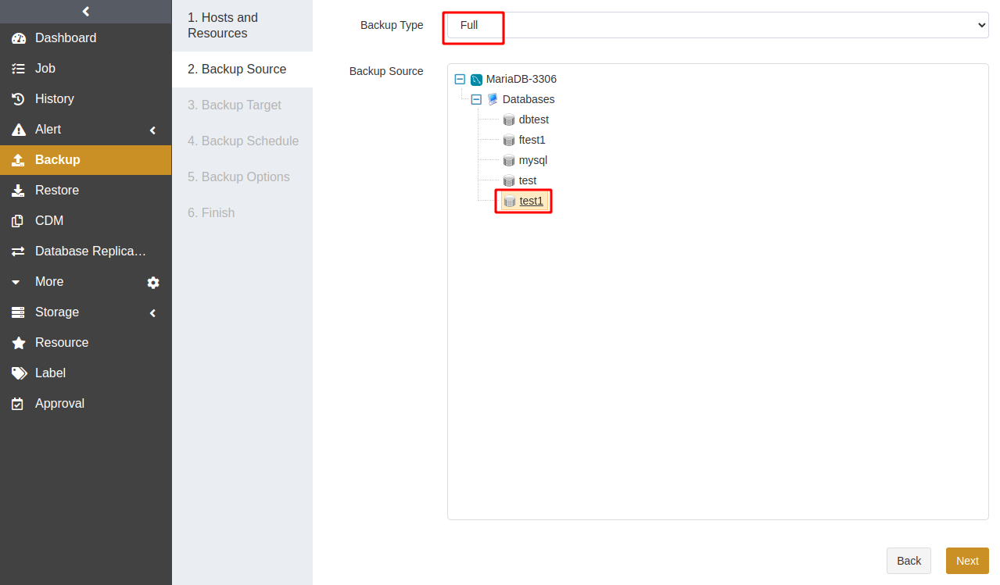
Select a Backup Target. The target can be a standard storage pool, de-duplication storage pool, tape library pool, object storage service pool, and LAN-Free pool.
Select a Backup Schedule to set the execution time of the backup job. For details, see Backup Schedule Operation. It is recommended to run a full backup on a weekly basis.
Set Backup Options including common and advanced options.
Common options:

Compression: Fast compression is enabled by default.
Channels: This option can improve backup efficiency. The default value is 1 and the range is from 1 to 255. For details, see Channel Number Configuration.
binlog: You can enable binlog to achieve precise timepoint restores. Note that this operation will restart the database.
File name: Set the base name for binary logs. You can specify a path, but MariaDB should have access to the specified path.
Format: Set the format of binary logs, including ROW, STATEMENT, and MIXED.
Synchronizing binary log number: In this field, set the number of transactions that need to be committed to synchronize the binary logs from the cache to the disk. When the transaction commits reach the value, the logs will be flushed to the disk. The value ranges from 0 to 4294967295. 0 indicates that when to flush the logs is determined by the operating system. The value affects database efficiency and data consistency. The larger the value, the higher the efficiency and the lower the data consistency.
Database service Startup script: If the database cannot be managed with systemd, you can set a script in this field to start the database service.
Database service Stop script: If the database cannot be managed with systemd, you can set a script in this field to stop the database service.
Advanced options:

Reconnection time: This option supports 1 to 60 minutes. The job continues after the abnormal reset occurs in the network within the set time. The unit is minute.
Resumption buffer size: Set the resumption buffer size for the backup job.
Speed limit: It can limit data transfer speed or disk read and write speed. The unit is MiB/s.
Precondition: The precondition is checked before the job starts. The job execution is aborted when the precondition is invalid.
Pre/Post action: The pre action is executed after the job starts and before the resource is backed up or restored. The post action is executed after the resource is backed up or restored.
Acquiring database global lock timeout: Set the time to wait for the acquisition of the database global lock. When the acquisition exceeds the value, the job will be stopped. 0 means no timeout. The unit is minute.
Lock retry count: Set the retry count when an error occurs during the backup job.
Long query threshold: Do not add a lock until the long query over this threshold is finished. 0 means no delay. The unit can be second and minute.
Long query timeout: Set the time to wait for the completion of a long query. 0 means no delay. The unit can be second and minute.
Long copy interval: It refers to the interval to copy transaction logs. The unit is millisecond.
Backup retry count: When the DDL operation is not written into the transaction log, the backup job will be retried for the specified times. 0 means no retry.
Backup retry interval: When the DDL operation is not written into the transaction log, the backup job will be restarted after the specified interval. The unit is minute.
Set a Job Name and confirm the job information. Click Submit.
Create Incremental Backup Jobs#
It is recommended to perform full database backups regularly (such as weekly) and incremental backups at short intervals (such as daily). With incremental backups, you can back up data that has changed since the last full backup so that you have at least one recoverable point in time every day.
Creating an incremental backup is the same as creating a full backup. Select Incremental as the backup type and choose databases.
Note:
If the database has not been fully backed up, or has not been fully backed up after the restore, the first incremental backup will be performed as a full backup by default.
Create Log Backup Jobs#
Based on periodic full and incremental backups, you can also add frequent log backups to back up only the binary logs of the database. The appropriate log backup frequency depends on the balance between your tolerance for the risk of work loss and the number of log backups you can store, manage, and potentially restore. Performing a log backup every 15 to 30 minutes may be sufficient. But if your business requires minimizing the risk of work loss, consider running more frequent log backups. More frequent log backups also increase the frequency of log truncation, resulting in smaller log files.
Creating a log backup is similar to creating a full backup. Select Log as the backup type and choose a database.
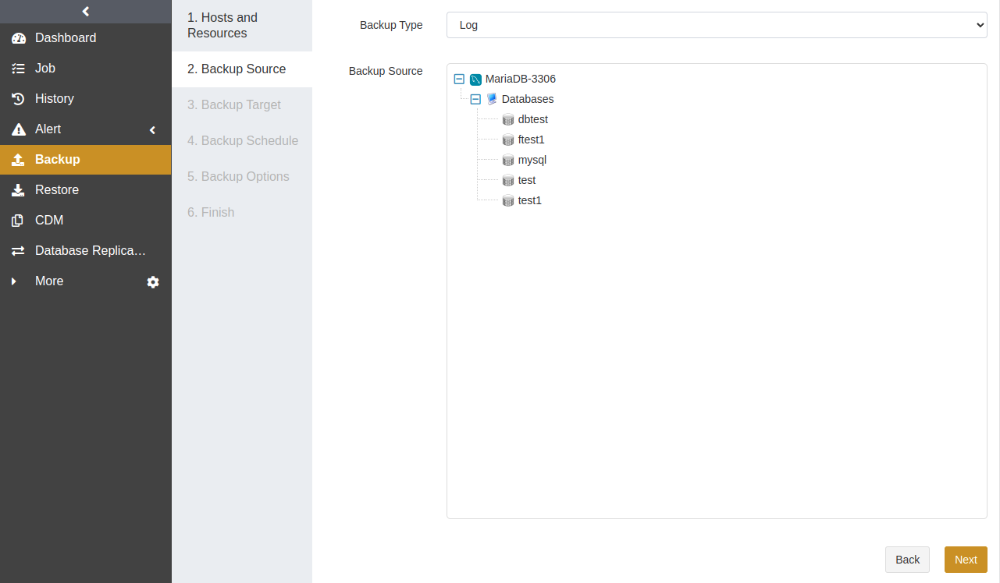
Note: The binary log should be enabled in MariaDB for log backups.
Backup Options -> Common provides the Backed-up binary logs option.
Backed-up binary logs: Only log backup and continuous log backup have this backup option.
Enable Delete after backup: After the log backup is completed or the continuous log backup is stopped, the backed-up binary logs will be deleted.
Disable Delete after backup: After the log backup is completed or the continuous log backup is stopped, the backed-up binary logs will not be deleted. Instead, they will be automatically deleted by MariaDB according to the system configuration.
Create Continuous Log Backup Jobs#
Continuous log backup keeps backing up MariaDB binary logs to real-time backup pools. It requires the following conditions:
The binary log is enabled in MariaDB.
server_id of MariaDB is configured.
The database has a full backup set as the base.
One instance can only run a continuous log backup job at one time. When a full backup job is running, the continuous log backup job will be in the waiting state. After a completed restore job, a full backup job should be first performed on the MariaDB host before a continuous log backup job.
Creating a continuous log backup is similar to creating a log backup. Select Continuous Backup as the backup type and chooses database instances.
Note: The backup target of MariaDB continuous log backup jobs can only be real-time backup pools.
Create Logical Backup Jobs#
Logical backup jobs can back up one or more MariaDB databases.
Creating a logical backup is the same as creating a full backup. Select Logical as the backup type and chooses one or more databases.
Note: MariaDB on Windows only supports logical backup.
Create Synthetic Backup Jobs#
The first MariaDB synthetic backup job is a full backup and the subsequent ones are incremental. Each incremental backup will be synthesized with the full backup to create a synthetic backup set. iSCSI and FC storage types are supported.
Prerequisites for creating a synthetic backup:
The data disk of the storage server requires the ZFS file system. For installation, refer to the Server Requirements section in the Installation Guide.
iSCSI/FC connections are configured between the agent and the storage server.
The admin has created a Database Synthetic Pool and assigned it to operators.
Select Synthetic Backup as the backup type and choose databases.
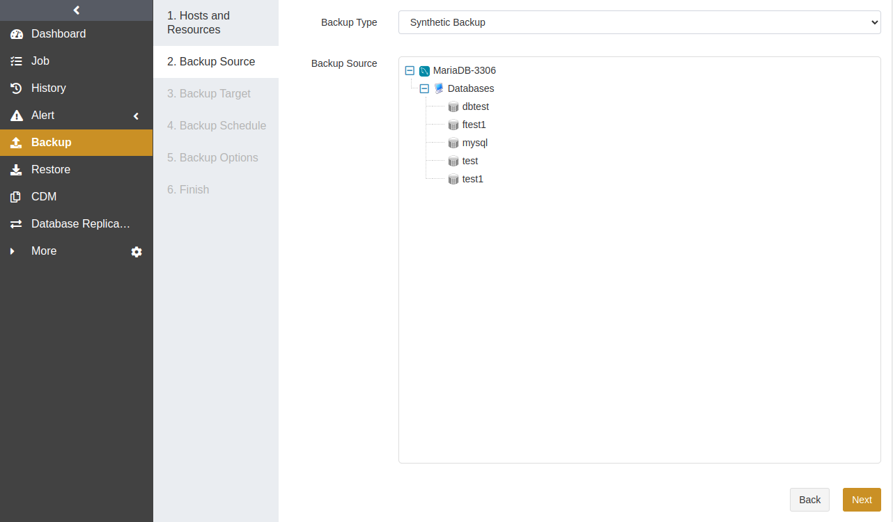
Select a Backup Target. The backup target can only be a database synthetic pool. If no database synthetic pool is available, please contact the admin to create one.
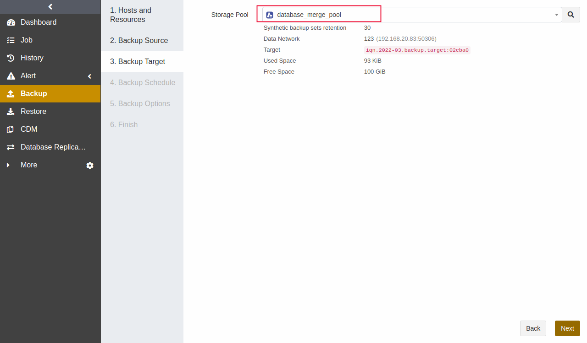
Select a Backup Schedule to set the execution time of the backup job. For details, see Backup Schedule Operation. It is recommended to run a synthetic backup on a daily basis.
Set Backup Options including common and advanced options. Compared with full backup options, synthetic backup options do not provide reconnection time, resumption buffer size, and speed limit.
Common options:
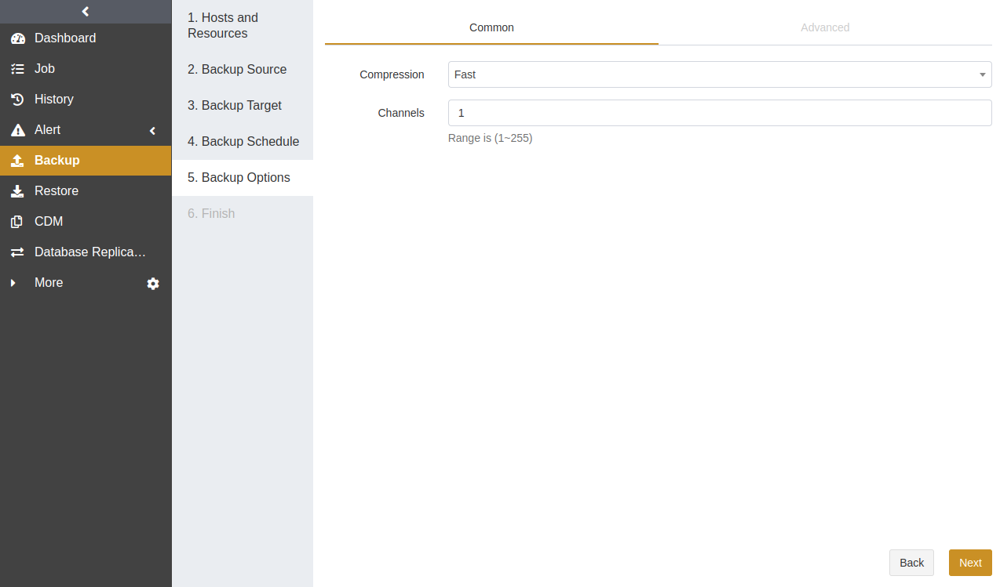
Advanced options:

Set a Job Name and confirm the job information. Click Submit.
Create Restore Jobs#
This chapter introduces how to restore MariaDB databases. ADPS provides a variety of restore types for different needs, including timepoint restore, logical recovery, instant recovery, log restore, and recovery testing.
Prerequisites#
A backup job has been completed successfully. See Create Backup Jobs.
To restore to another host, install an agent on that host, activate its license, and authorize the resource to users.
Create Timepoint Restore Jobs#
When a logical error or disaster occurs in a MariaDB database, you can restore the database to a specified point-in-time state with Timepoint Restore.
Go to the Restore page. Select the MariaDB database host and instance. Click Next.
Select Timepoint Restore. Specify a point in time for the restore job. Click Next.
Restore to Point in Time:
If the database has log backups or continuous log backups, you can drag the slider control or enter the time to specify the point in time for the restore job.

Restore to Backup State (shortest recovery time):
This option can restore full backup sets, incremental backup sets, and synthetic backup sets, but it cannot restore binlog.

Select a Restore Target. The restore target can be the source or a different host. Click Next.
Select a Restore Schedule. Only immediate and one-time schedule types are supported.
Set Restore Options according to your needs. Timepoint restore adds the following options:
Skip grant tables while applying binlog: You can enable this option to avoid the problem that the binary logs cannot be accessed due to insufficient privileges.
Accelerate applying binlog: You can enable this option to accelerate the recovery speed of binlog.
Force applying binlog: If this option is enabled, it will continue to apply binlog when errors occur.
MySQL service startup timeout: It refers to the time to wait for MySQL service to start during the job session.
Cache directory: When you use timepoint restore to restore incremental backup sets, the backup sets will be downloaded to the cache directory if you have set it in this option field. If you do not set the cache directory, the backup sets will be restored directly to the data directory in MariaDB.
Confirm the job information and submit the job.
Create Logical Recovery Jobs#
When a media error occurs in a MariaDB database, such as data file corruption or accidental deletion, you can run logical recovery jobs to recover the database or some data files to the latest state.
Select the MariaDB database host and instance. Click Next.
Select Logical Recovery as the restore type and choose the backup set that you want to restore. Click Next.
Select a Restore Target. Click Next.
Select a Restore Schedule. Logical recovery only supports immediate and one-time schedule types. Click Next.
Set Restore Options according to your needs. Click Next.

Confirm the job information and click Submit.
Create Instant Recovery Jobs#
Instant recovery can only be performed on the MariaDB databases with synthetic backup sets.
Note:
If the storage pool storing synthetic backup sets is of the iSCSI type, then the iSCSI Initiator should be installed on the host where you perform the restore job.
If the storage pool storing synthetic backup sets is of the FC type, the HBA API Driver corresponding to the HBA card should be installed on the host where you perform the restore job.
Go to the Restore page. Select the MariaDB host and instance. Click Next.
Select Instant Recovery as the restore type. Then specify a point in time for the restore job. Click Next.
Restore to Point in Time
If the database has log backups or continuous log backups, you can drag the slider control or enter the time to specify the point in time for the restore job.
Restore to Backup State (shortest recovery time)
When the Restore to Backup State (shortest recovery time) is selected, the instant recovery job can only recover synthetic backup sets but not binlog.
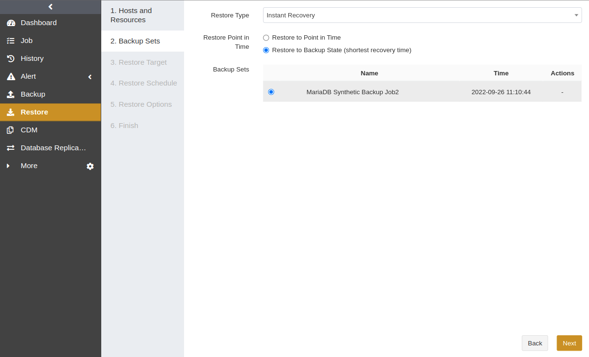
Select a Restore Target. You can restore data to another instance on the source or a different host. Click Next.
Select a Restore Schedule. You can select immediate or one-time schedule. Click Next.
Set Restore Options.
Common options:
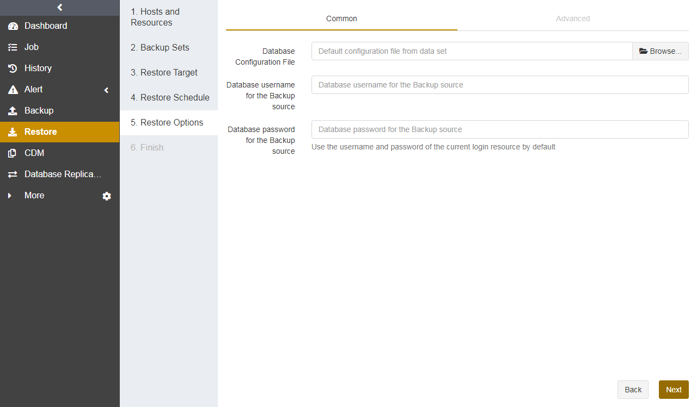
Database configuration file: Click Browse or enter the path of the MariaDB database configuration file. If you leave it blank, the default configuration file will be used.
Database username for the backup source: Enter the username of the backup source database. If you leave it blank, the username of the current logged-in resource (i.e., target database) will be used.
Database password for the backup source: Enter the password of the backup source database. If you leave it blank, the password of the current logged-in resource (i.e., target database) will be used.
Advanced options:
In the advanced options, you can set precondition, pre/post action, database service startup script, database service stop script, skip grant tables while applying binlog, accelerate applying binlog, force applying binlog, and MySQL service startup timeout.
Keep the mount point even if job fails: Enable this option to keep the mount point if the instant recovery job fails.
Set a Job Name and confirm the job information. Click Submit.
Check Successful Recovery#
After the instant recovery is completed, enter the CDM menu. You can see a mounted recovery record under the corresponding data copy.
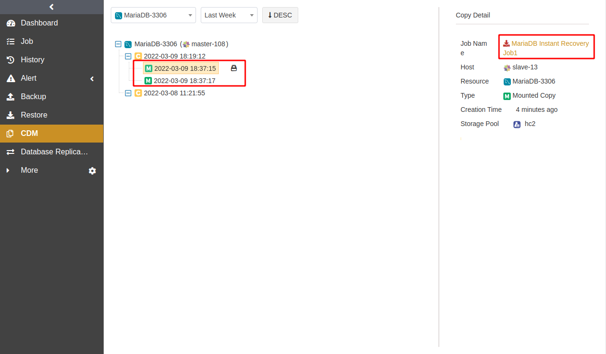
Detach Copy#
You can detach the mounted data copies from the agent using the Detach icon. Note that if the mounted directory has data files being applied, the files will also be deleted.
Click the Detach icon beside the data copy record.
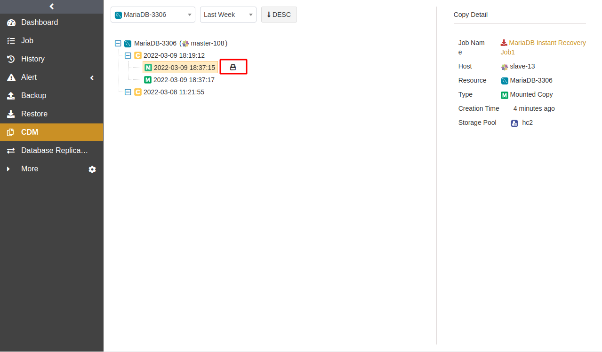
Pay attention to the warning, enter the verification code, and click OK.

Create Log Restore Jobs#
Log restore jobs can only be applied when the database has log backups or continuous log backups. They only download the binary logs to the specified directory on the agent but do not perform the database restore.
Select the MariaDB host and instance. Click Next.
Select Restore Archived Logs as the restore type. Then drag the slider control or enter the time to specify the point in time for the restore job. Click Next.
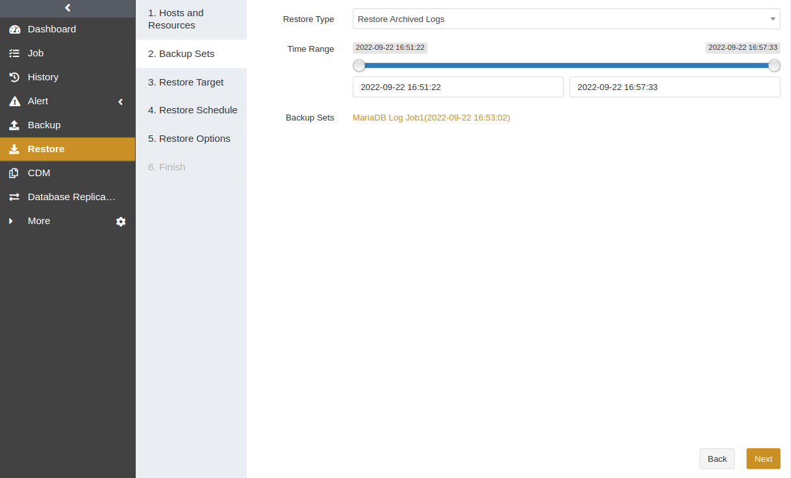
Select a Restore Schedule. Only immediate and one-time schedules are supported. Click Next.
Set Restore Options. Click Next.
Common options:
You can set binlog Destination in the common option.
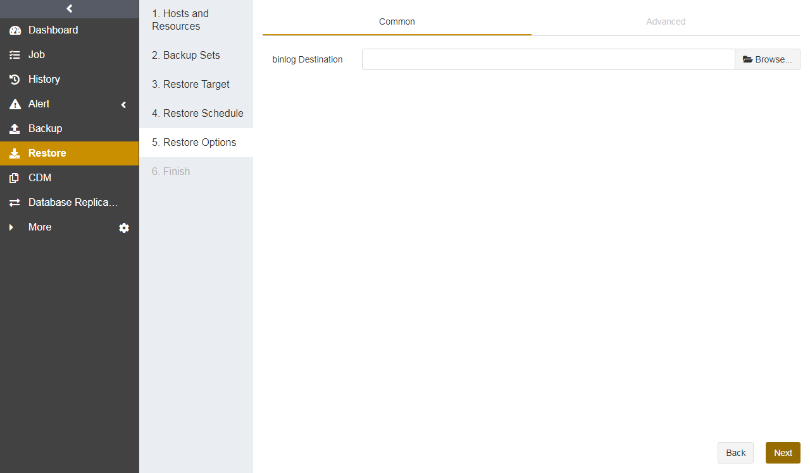
Advanced options:
You can set reconnection time, resumption buffer size, speed limit, precondition, and pre/post action.
Confirm the job information and click Submit.
Create Recovery Testing Jobs#
You can restore the latest backup sets of MariaDB to other instances hourly, daily, weekly, or monthly.
Select the MariaDB host and instance. Click Next.
Select Recovery Testing and choose databases. You can click the Rename icon and specify the restored database name.

Select a Restore Target. The target can be the source or a different host. Click Next.
Select a Restore Schedule. It supports hourly, daily, weekly, and monthly schedule types. Click Next.
Set Restore Options, including common and advanced options. Click Next.
Confirm the job information. Click Submit.
Wait for the job to be executed. The job will restore the latest backup sets of the source host.
Manage Jobs#
The Job page provides the job information of all agents. You can start, modify, clone, and delete the jobs.

Start: Click
 to start the job immediately.
to start the job immediately.Modify: Click
 to modify the basic job information, backup/restore schedule, and backup/restore options.
to modify the basic job information, backup/restore schedule, and backup/restore options.Clone: Click
 to create multiple similar backup jobs.
to create multiple similar backup jobs.Delete: Click
 to access the confirmation window. Click OK to delete the job.
to access the confirmation window. Click OK to delete the job.
Backup Strategy#
Backup Schedule Operation#
ADPS provides six types of backup schedules. The schedule type selected is only valid for the currently created job.

Immediate: The job immediately starts to run after it is submitted.
One time: After the job is created, it will be in an idle state and start to run when the specified Start time is reached.
Hourly: After the job is created, the first run will be initiated at the specified Start Time. The next run will be executed after a specified number of hours/minutes within the time range according to the setting. If the unit is Hour, then you can set the value from 1 to 24. If you select the Minute as the unit, then you can set the value from 1 to 60.
Daily: After the job is created, the first run will be initiated at the specified Start Time. The next run will be executed after a specified number of days according to the setting. The value is an integer between 1 and 5.
Weekly: After the job is created, the first run will be initiated at the specified Start Time. The next run will be executed after a specified number of weeks according to the setting. You can specify which day of the week to run the job.
Monthly: The job runs on the specified days of some months at the specified time. For example, you can set the job to run on January 1 and June 1 at 20:00. Or you can set it to run on the first Monday of every month at 20:00.
Example: Perform the job every two weeks on Friday at 18:00

The actual execution time will be:
If the current time is Friday at 17:00, the execution time will be Friday at 18:00 (the current day).
If the current time is Thursday at 17:00, the execution time will be Friday at 18:00 (the next day).
If the current time is Saturday at 17:00, the execution time will be next Friday at 18:00.
After the first run is completed, the job will start automatically at 18:00 on Friday every two weeks.
Backup Strategy Advice#
There are six MariaDB backup types: full backup, incremental backup, log backup, continuous log backup, logical backup, and synthetic backup. It is recommended to formulate the following backup strategy according to different situations such as network bandwidth, business data volume, security requirements, and the amount of lost data that you can tolerate.
When the application traffic is relatively small, run a Full Backup once a week to ensure that you have an RTO of one week.
After that, you can run an Incremental Backup every day to reduce the backup time and ensure that you have an RPO of one day.
If the database supports log backup, you can run a Log Backup every few hours to reach a second-level RPO. For example, you can run a log backup every 2 hours.
Avoid using the following strategies:
Perform only full backups.
Perform a full backup followed by all incremental or log backups.
Channel Number Configuration#
Channel number for backup jobs
MariaDB supports up to 64 channels. You can set the number of channels for backup jobs according to your environment. A reasonable number can improve job performance. The number of channels is recommended to be the same as that of CPU cores. The efficiency improvement will not be obvious if the number of channels exceeds that of CPU cores.
Channel number for restore jobs
The channel number for a restore job is the same as that for the backup job. The Restore page does not provide the Channels option by default.
MariaDB Cluster#
ADPS supports two types of MariaDB clusters: master-slave replication and master-master replication. Before the first backup and restore, bind the MariaDB nodes into a cluster.
Master-Slave Replication#
The deployment of each node in the cluster is required. For details, see Install and Configure Agent as well as Activate License and Authorize User.
Cluster Binding#
Go to Resource -> Cluster. Click the Cluster Binding icon.
Customize the cluster name. Select the active node as the Primary Node, Master Slave Replication as the Type, and the inactive node as the Nodes. You can set the Keepalived Configuration File and Preferred Backup Node according to your needs. Click Submit.
Backup and Restore#
MariaDB master-slave has the same backup and restore types as the single instance.
The Backup interface displays only the active node of the MariaDB master-slave cluster. Select the active node as the backup resource. The remaining steps are similar to Create Backup Jobs.
If a switchover occurs in the nodes of the MariaDB master-slave cluster, the new active node will automatically take over the backup job.
Master-Master Replication#
Cluster Binding#
Go to Resource -> Cluster. Click the Cluster Binding icon.
Customize the cluster name. Select a master node in the cluster as the Primary Node, Dual-master Replication as the Type, and other master nodes of the cluster as the Nodes. You can set the Keepalived Configuration File and Preferred Backup Node according to your needs. Click Submit.
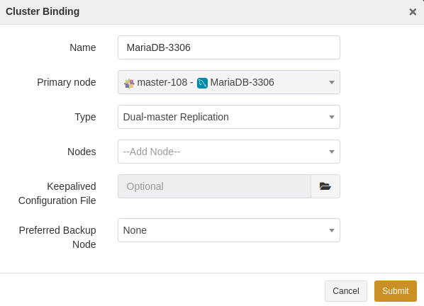
Backup and Restore#
When creating a backup job, select the virtual instance as the backup resource. The remaining steps are similar to Create Backup Jobs.
Limitations#
Function |
Limitations |
|---|---|
Resource |
· MariaDB clusters on Windows are not supported. |
Backup |
· MariaDB on Windows only supports logical backup. |
Restore |
· During physical restore, if the MariaDB service is started in uncommon ways, then you need to write the script in the Database service startup/stop script field. |
Glossary#
Term |
Description |
|---|---|
Fast compression |
Compress data during backup using fast compression algorithms. |
Log truncation |
Log truncation can remove inactive virtual log files from the logical transaction logs in a MariaDB database to free up space in the logical logs for reuse by the physical transaction logs. |